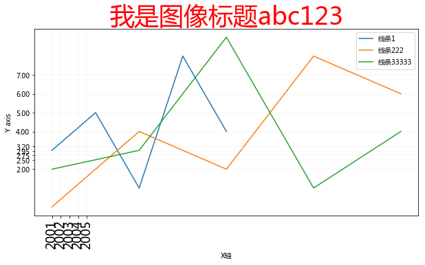
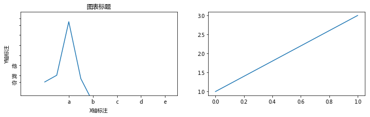

Matplotlib-图像组件
import matplotlib.pyplot as plt
plt.rcParams['font.family'] = ['Arial Unicode MS', 'Microsoft Yahei', 'SimHei', 'sans-serif']
plt.figure(figsize=(10, 5))
n1, = plt.plot(
[1,2,3,4,5],
[3,5,1,8,4],
label='线条1',
)
n2, = plt.plot(
[1,3,5,7,9],
[0,4,2,8,6],
label='线条222',
)
n3, = plt.plot(
[1,3,5,7,9],
[2,3,9,1,4],
label='线条33333',
)
# 图像组件
# 标题
plt.title(
'我是图像标题abc123',
color='#ff0000',
fontsize=36,
)
# 卓标准标注
plt.xlabel('X轴')
plt.ylabel('Y axis')
# 刻度和刻度标注
plt.yticks([2,2.5,2.75,2.95,3.2,4,5,6,7])
plt.xticks(
[1,1.2,1.4,1.6,1.8], # 坐标值
[2001, 2002, 2003, 2004, 2005], # 坐标值刻度标注
rotation=90, # 标注旋转角度
fontsize=18, # 字体大小
)
# 坐标范围,会和上面代码影响
#plt.axis([3,7, 2,5]) # x轴起始坐标，x轴结束坐标，y轴起始坐标，y轴结束坐标
# plt.xlim([-50, 50]) # x轴
# plt.ylim([-20, 20]) # y的
#图例
plt.legend()
# 图例位置可用参数：
# best 默认
# right
# center,center left,center right
# lower center,lower left,lower right
# upper center,upper left,upper right
plt.legend(
handles=[n1, n2,n3], # 给指定数据绘制图例
loc='best', # 图例位置
frameon=True # 有无边框
)
# 网格
plt.grid(linewidth=0.2, alpha=0.5)
# 保存图像
# plt.savefig('test')
plt.savefig(
'test2.jpg', # 图像路径
dpi=300, # 分辨率
bbox_inches='tight' # 剪除当前图表周围的空白部分
)

面向对象的组件书写（了解）
一般简单绘图使用面向过程写法，复杂绘图使用面向对象写法
#创建父对象，图像宽高可选
fig = plt.figure(figsize = (12, 3))
#创建子对象，1行2 列，选中第1 个子图
ax2 = fig.add_subplot(122)
ax2.plot([1,3])
ax = fig.add_subplot(121)
ax.plot([1,3,19,2,-5])
# 图表标题
ax.set_title('图表标题')
# 坐标轴标注
ax.set_xlabel('X轴标注')
ax.set_ylabel('Y轴标注')
# 刻度设置和刻度标注
ax.set_xticks([2,4,6,8,10]) #x 轴刻度设置
ax.set_yticks([1,3,6,9,12,15,18,20]) # y轴刻度设置
ax.set_xticklabels(['a','b','c','d','e']) # x轴刻度标注
ax.set_yticklabels(['你','我','他']) # y轴刻度标注
# 坐标范围
ax.axis([-2,11,-3,22]) # X轴-2到11,Y轴-3到22
[-2, 11, -3, 22]
